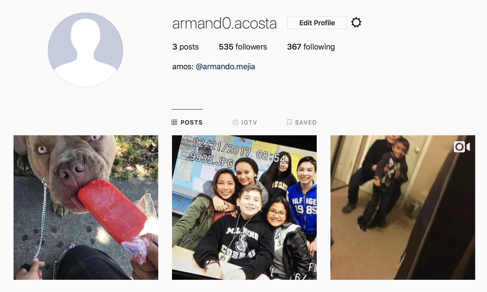
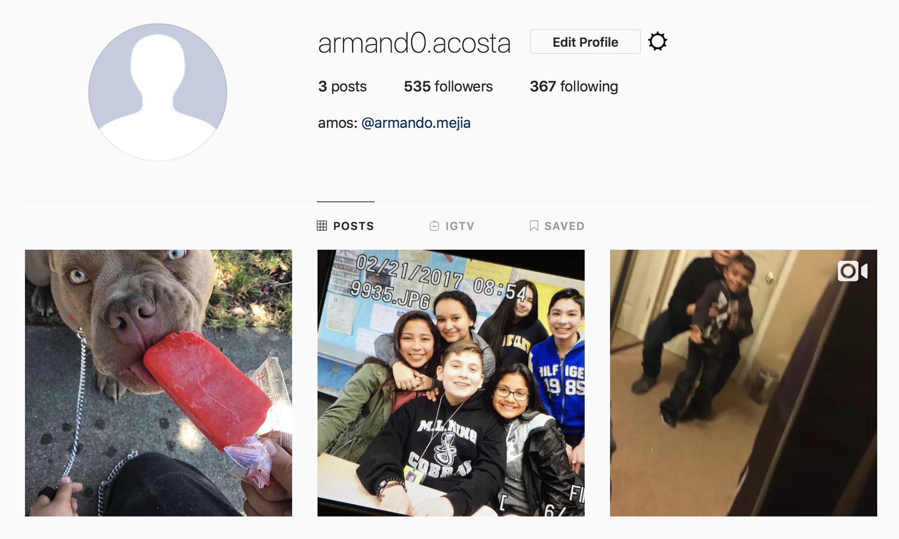

Armando Acosta, PhD
SMASH Scholar at Berkley
Impact Academy if Arts and Technology
My name is Armando Acosta. I am currently 15 years old. I live in Hayward, CA. I am currenctly a 10th grader at Impact Academy of Arts and Technology. I have one sister named Maritza Acosta. I also have two dogs. One Chihuhua, Popeye, and one American Bully, Toro. My favorite food is tacos. One fun fact about me is that I built my schools library.